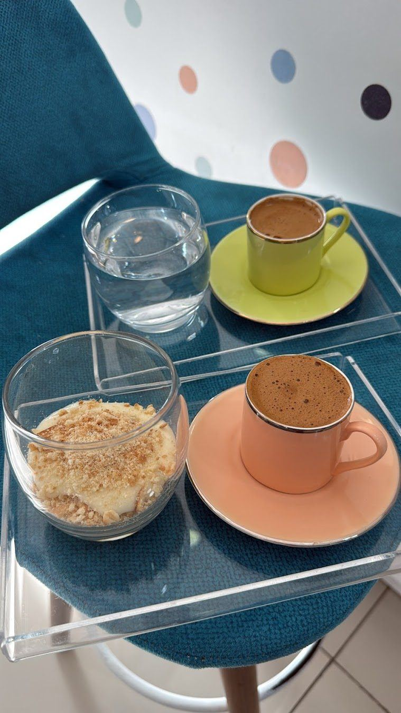
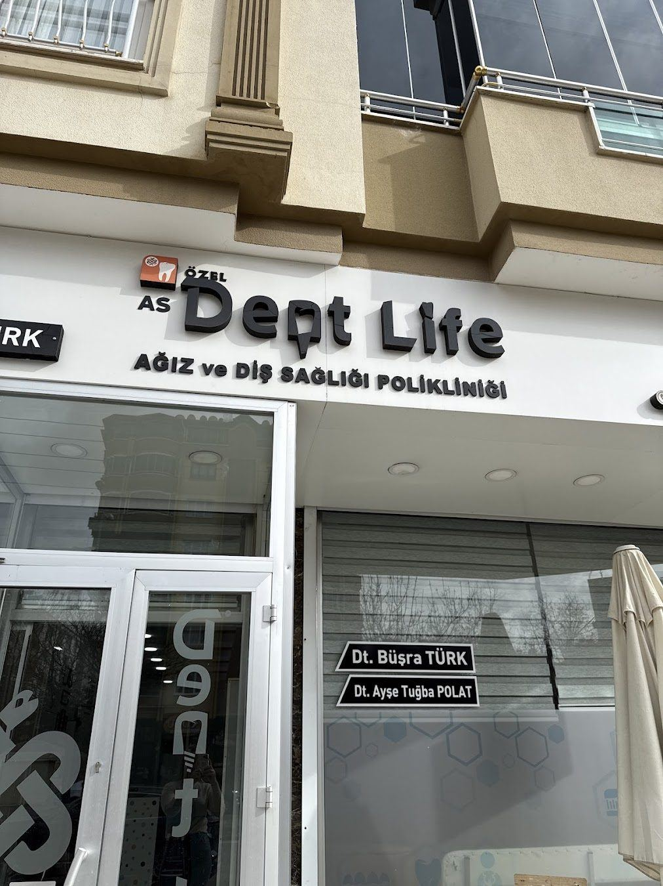
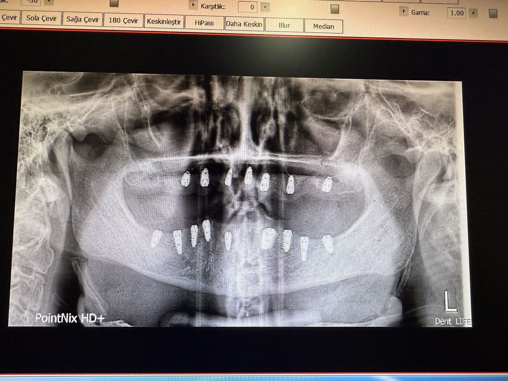

Bir fincan kahve, güler yüz ve sağlıklı dişler
Dt. Büşra Türk ve Dt. Ayşe Tuğba Polat ile Duisburg Bulvarı'nda sıcak bir poliklinik.



Tedavi seçenekleri
Muayene sonrası size uygun seçenekler birlikte değerlendirilir.
İmplant tedavisi
Eksik dişlerin yerine çene kemiğine yerleştirilen titanyum vidalarla sabit ve doğal görünümlü diş desteği sağlanır.
Zirkonyum kaplama
Metal desteksiz, ışık geçirgenliği doğal dişe yakın kaplamalarla renk ve form düzenlenir.
Kanal tedavisi
İltihaplanan ya da hasar gören diş sinirinin temizlenip kanalların doldurulmasıyla diş ağızda korunur.
Ortodonti ve şeffaf plak
Çapraşık dişler ve kapanış bozuklukları braket ya da şeffaf plak sistemleriyle düzenlenir.
Çocuk diş hekimliği
Süt dişi dönemi takibi, koruyucu flor ve fissür örtücü uygulamaları çocuğa uygun bir dille yapılır.
Diş beyazlatma
Muayenehane tipi ya da ev tipi uygulamalarla diş renginde birkaç ton açılma hedeflenir.
Şikayetinize uygun tedavi
Yaşadığınız durumu seçin, size uygun olabilecek tedavi hakkında bilgi edinin.
İlk randevudan kontrollere
Her aşamada ne yapılacağını önceden bilirsiniz.
Muayene ve görüntüleme
Ağız içi muayene ve gerekli röntgenlerle mevcut durum birlikte değerlendirilir.
Tedavi planı
Seçenekler, süre ve aşamalar açıkça anlatılır, karar sizinle birlikte verilir.
Tedavi seansları
Planlanan işlemler randevulu ve sizi bekletmeyecek şekilde uygulanır.
Kontrol ve bakım
Tedavi sonrası düzenli kontrollerle sonuçların korunması takip edilir.
Size uygun bir saat bulalım
Formu doldurun ya da arayın, randevunuzu birlikte planlayalım.